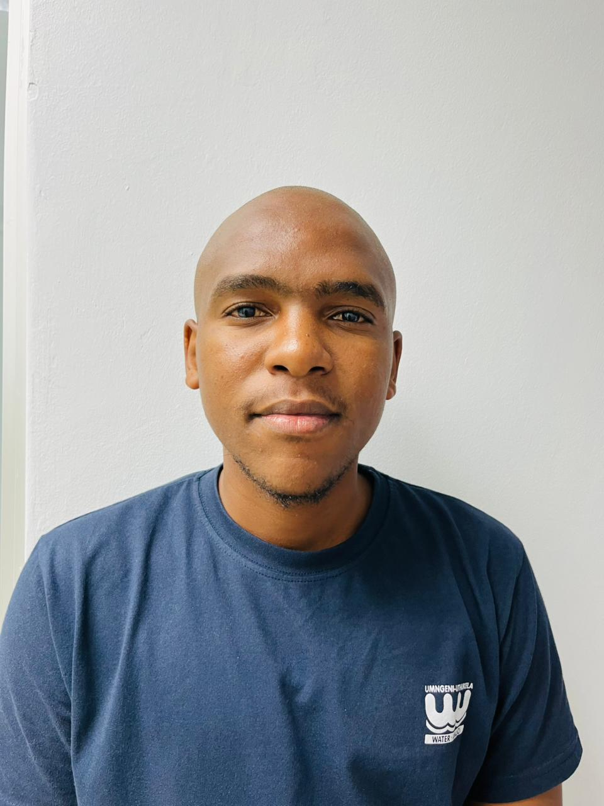

Motivated and detail-oriented Junior IT Technician with hands-on experience in desktop support, IT service management, and user support within enterprise environments. Proven ability to provide first-line technical support, troubleshoot hardware and software issues, and resolve user queries efficiently using ticketing systems such as SAP ITSM. Experienced in managing user accounts, system access, and supporting Microsoft 365 applications, with a strong foundation in networking fundamentals and system administration. SAP-certified with exposure to SAP S/4HANA business processes, enabling effective support of both technical and system-related user challenges.A customer-focused professional with strong problem-solving abilities, committed to delivering reliable IT support, maintaining system performance, and continuously improving technical skills in dynamic environments.
I participated in intensive training focused on SAP business processes, digital transformation, and emerging technologies. The program provided hands-on exposure to SAP solutions, enabling me to develop a strong understanding of end-to-end business processes across enterprise environments. Through practical exercises, workshops, and guided learning, I gained valuable knowledge of how organizations leverage SAP systems to improve operational efficiency and business performance. As part of my professional development, I successfully earned the SAP Certified Application Associate – Implementation Consultant (End-to-End Business Processes) certification and the SAP Certified Associate – Generative AI Developer certification, demonstrating my competence in both enterprise business process implementation and the application of Generative AI technologies within the SAP ecosystem.
Provided first-line support for system and SAP-related issues impacting business operations. Logged, tracked, and resolved support tickets using SAP ITSM (IT Service Management)Managed Level 1 support queries, ensuring timely resolution within SLA requirements. Engaged with users to understand system challenges and provide effective solutions. Escalated complex SAP and system-related issues to relevant support teams. Managed user accounts, roles, and access permissions in line with business processes. Identified recurring system issues and contributed to root cause resolution. Maintained accurate documentation of incidents, resolutions, and support procedures. Supported system monitoring, backups, and ensured data integrity Outlook setup & troubleshooting, Microsoft Teams support, OneDrive & SharePoint basics, Email configuration issues Antivirus and endpoint protection basics, Password policies & user awareness Troubleshooting hardware (PCs, laptops, printers) Installing and configuring software Promoted adherence to IT and business processes through user support and follow-up.
Provided desktop support to end-users, resolving hardware and software issues. Assisted in troubleshooting and resolving technical problems related to desktops, laptops, printers, and peripherals. Supported Microsoft 365 applications, including Outlook, Teams, OneDrive, and SharePoint. Managed user accounts and access permissions in Active Directory. Assisted in maintaining IT inventory and documentation of support activities. Collaborated with the IT team to ensure timely resolution of support tickets and adherence to service level agreements (SLAs). Contributed to user training sessions on IT best practices and security awareness.
Available upon request.
Please feel free to contact me for any additional information or to schedule a meeting. Contact Me Here